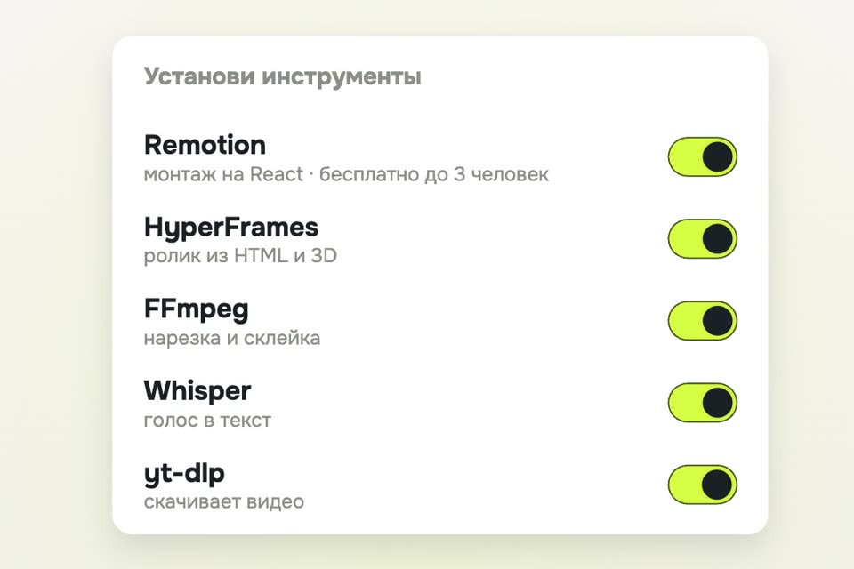

Нейромонтажёр на Claude Code и наш стиль
Всё из ролика без кодового слова: папка, пять инструментов, гайд по стилю и монтаж промптом. И наш стиль монтажа целиком.
- бесплатно для частных лиц
- всё в одной папке
- чужие кадры не берём
К ролику «Свой нейромонтажёр на Claude Code» · обновлено 27 октября 2026
Нужен Claude Code на компьютере и платная подписка Claude. Веб-версия в браузере работает в облачной песочнице и ваших файлов на компьютере не видит.
Первый ролик за 4 шага

Создайте папку и откройте в ней Claude Code
Монтажёр работает только с тем, что лежит в этой папке.
- Claude Code на компьютере. Десктоп-приложение Claude (вкладка с Claude Code) или Claude Code в терминале. Веб-версия в браузере работает в облачной песочнице и ваших файлов на компьютере не видит. Нужна платная подписка Claude.
- Папка. Создайте папку
Монтажёр, внутри три подпапки:
Монтажёр/
Исходники/ видео с телефона
Референсы/ ролики-образцы, музыка, шрифты, логотип
Экспорт/ готовые роликиСессия. Новая сессия Claude Code, режим «на этом компьютере» (не облачный), рабочая папка — Монтажёр. В терминале то же самое:
cd Монтажёр && claudeСессия Claude Code на этом компьютере, рабочая папка Монтажёр.
Поставьте инструменты одним промптом
Claude сам проверит, что уже стоит.
- HyperFramesРолик из HTML: титры, анимация, 3D. Мы собираем на нём. Apache-2.0.
- RemotionРолик на React, вместо HyperFrames. Бесплатно частным лицам и компаниям до 3 человек, дальше платная.
- FFmpegНарезка, склейка, звук. LGPL/GPL.
- faster-whisperГолос в текст по словам, локально (Whisper). MIT.
- yt-dlpСкачать видео по ссылке. Unlicense.
Достаточно одного движка: HyperFrames или Remotion. Промпт установки:
Стань моим монтажёром коротких вертикальных роликов. Мы работаем только в этой папке.
Проверь, что уже стоит, и поставь недостающее: ffmpeg, yt-dlp, faster-whisper (локальное распознавание речи)
и один движок монтажа кодом: HyperFrames (https://github.com/heygen-com/hyperframes) или Remotion (https://github.com/remotion-dev/remotion).
Перед каждой установкой скажи одной строкой, что ставишь и куда. Python-пакеты ставь в отдельное окружение внутри этой папки,
не в систему. Ничего не удаляй и не трогай файлы вне этой папки. В конце покажи версии всего, что стоит.У HyperFrames есть готовый плагин для Claude Code, его можно поставить и руками (команды из их README):
claude plugin marketplace add heygen-com/hyperframes
claude plugin install hyperframes@hyperframesПеред каждой установкой Claude пишет одной строкой, что ставит и куда. В конце показывает версии всего, что стоит.
Соберите гайд по стилю
Из роликов автора, чей монтаж нравится, или из ваших собственных.
Claude сам видео не смотрит. Он режет его на кадры (ffmpeg), слушает речь (faster-whisper) и считает длины планов. Подробно, как это устроено: Claude смотрит рилс по ссылке.
Образцы: три–пять роликов автора, чей монтаж нравится, или ваши собственные. Положите файлы в Референсы/. Ссылки тоже можно, но Instagram без входа часто не отдаёт видео, а входить в аккаунт через агента мы не советуем.
Изучи стиль монтажа по роликам в папке «Референсы» (или скачай по ссылкам: <ссылка 1>, <ссылка 2>, <ссылка 3>).
Для каждого ролика: кадры раз в секунду через ffmpeg, расшифровка речи через faster-whisper, длины планов по смене кадра.
Собери файл «Референсы/СТИЛЬ.md»: шрифты и цвета (с кодами), субтитры (размер, место, сколько слов за раз, как подсвечено
ключевое слово), темп склеек (средняя длина плана в секундах), переходы, движение камеры, музыка и звуки, как устроены
первые 2 секунды и финал. Пиши только то, что видно в кадрах и слышно в расшифровке; где не уверен, пометь «не видно».
Чужие кадры, музыку и лица в наши ролики не переносим: берём только приёмы.Файл Референсы/СТИЛЬ.md: шрифты и цвета, субтитры, темп склеек, переходы, камера, музыка, первые 2 секунды и финал. Где Claude не уверен, стоит «не видно». Не хотите разбирать чужих — возьмите наш стиль.
Снимите и смонтируйте
Правки обычными словами, как живому монтажёру.
Снимите ролик как обычно, положите файл в Исходники/, музыку со свободной лицензией в Референсы/музыка/. Музыку Claude не сочиняет, он подкладывает то, что вы дали.
Смонтируй моё видео «Исходники/<имя файла>» в вертикальный рилс 1080×1920 по гайду «Референсы/СТИЛЬ.md».
1) Расшифруй речь (faster-whisper, по словам) и вырежи паузы длиннее 0,4 с и оговорки.
2) Субтитры по словам, как в гайде.
3) Музыку бери только из «Референсы/музыка» и опусти её под голосом.
4) Сначала покажи раскадровку: таблица «время | что в кадре | текст на экране» и 4 кадра-картинки. Не рендери, пока я не скажу «ок».
5) После «ок» — рендер в «Экспорт/», громкость −14 LUFS, и покажи путь к файлу.Правки обычными словами, как живому монтажёру: «сделай заголовок крупнее», «убери вторую паузу», «музыку тише». Все три промпта одним файлом: prompts/moushn.md.
Сначала раскадровка: таблица и 4 кадра-картинки. После вашего «ок» — ролик в Экспорт/ и путь к файлу.
Наш стиль монтажа
Так собран ролик, к которому эта страница. Можно вставить как есть в Референсы/СТИЛЬ.md.
# Стиль Gorilla Under the Hood: обучающий рилс без лица
Формат: 1080×1920, 30 к/с, громкость −14 LUFS, пик −1,5 dBTP.
Цвета: фон тёплый белый #f8f7f3 → #ebeae4, карточки белые #ffffff с мягкой тенью, чернила #1a2023,
акцент лайм #d6ff43 только заливкой (текст на лайме тёмный), оливковый #425319 для второстепенного.
Шрифт: Onest 700 для заголовков и субтитров, Onest 400 для подписей.
Хук: первая фраза звучит в 0,0 с, без заставки. В первом кадре уже есть предмет и он двигается.
Кадр: один главный предмет по центру (карточка интерфейса, папка, телефон, фото), не слайд с заголовком и списком.
Интерфейс рисуем сами: тумблеры щёлкают, промпт печатается с кареткой, рамка выбора переезжает на сказанное слово.
Заголовки: капсом, буквы «дешифруются» слева направо из случайных знаков за 0,3–0,6 с, ровно на своём слове.
Переходы между шагами: кадр рассыпается на квадраты (серые, изредка лайм и чёрный) за 0,5 с.
Камера: не стоит ни в одном плане. Медленный наезд 1,00→1,05 и боковой сдвиг ±18 px, направление чередуется;
длинный план делится пополам, вторая половина крупнее.
Склейка: не реже раза в 3 с, на каждой склейке короткий шумовой вжух.
Субтитры: по 2–4 слова, на 77 % высоты; сказанные слова чернилами, следующие серым, ключевые на лаймовой подложке.
Картинки: анимация, которую пишет Claude, плюс настоящие фото со свободной лицензией (CC0, общественное достояние)
и снимки экрана. Логотипы чужих компаний не рисуем.
Шапка: «Шаг N» на лаймовой пилюле + название шага.
Финал: кодовое слово печатается в поле комментария, маскот выходит один раз.
Музыка: тихая, под голосом −30 dB, без голоса −22 dB; щелчки на тумблерах, звон на «готово».Честные ограничения
- Промпт установки мы не прогоняли на чистом компьютере: у нас всё уже стоит.
- Claude сам видео не смотрит: он видит кадры и расшифровку речи.
- Instagram без входа часто не отдаёт видео, а входить в аккаунт через агента мы не советуем.
- Музыку Claude не сочиняет, он подкладывает то, что вы дали.
- Лицензии проверены по GitHub 27.10.2026, перед работой в компании перечитайте их сами. У Remotion бесплатно только частным лицам и компаниям до 3 человек.